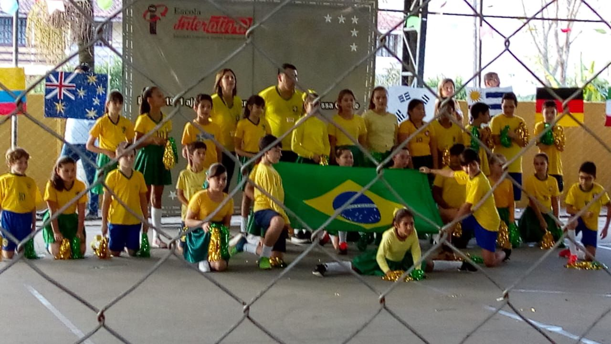

Minhas Memórias


Meu nome é Leonardo dos Santos Engelmann, tenho 15 anos e atualmente estudo no Colégio Estadual Padre Cláudio Morelli. Uma de minhas habilidades que gosto muito é jogar vôlei, eu estudei na escola Interativa por 5 anos da minha vida , pude viver muitas coisas e aprender muito sobre a vida de formas diferentes, e essas são algumas fotos dessas lembranças.